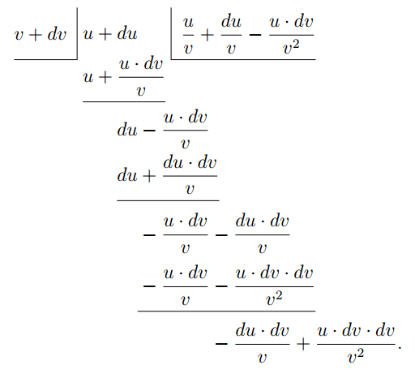

Aprendemos como diferenciar funções algébricas simples tais como $x^2 + c$ ou $ax^4$, e agora temos de considerar como atacar a soma de duas ou mais funções.
Por exemplo, seja
\[ y = (x^2+c) + (ax^4+b); \] qual será seu $\dfrac{dy}{dx}$? Como devemos proceder neste novo trabalho?A resposta a esta pergunta é bem simples: basta diferenciá-las, uma após a outra, assim:
\[ \dfrac{dy}{dx} = 2x + 4ax^3. \text{(Resp.)} \]Se tiver qualquer dúvida se isto está certo, experimente um caso mais geral, trabalhando-o por primeiros princípios. E o caminho é este.
Seja $y = u+v$, onde $u$ é qualquer função de $x$, e $v$ qualquer outra função de $x$. Então, deixando $x$ aumentar para $x+dx$, $y$ aumentará para $y+dy$; e $u$ aumentará para $u+du$; e $v$ para $v+dv$.
E teremos:
$ y+dy = u+du + v+dv.$
Subtraindo o $y = u+v$ original, obtemos
$dy = du+dv, $
e dividindo por $dx$, obtemos:
$\dfrac{dy}{dx} = \dfrac{du}{dx} + \dfrac{dv}{dx}.$
Isso justifica o procedimento. Você diferencia cada função separadamente e soma os resultados. Assim se agora tomarmos o exemplo do parágrafo precedente, e pusermos os valores das duas funções, teremos, usando a notação mostrada (capítulo III), \begin{alignat*}{2} \frac{dy}{dx} & = \frac{d(x^2+c)}{dx} &&+ \frac{d(ax^4+b)}{dx} \\ & = 2x &&+ 4ax^3, \end{alignat*} exatamente como antes.
Se houvesse três funções de $x$, que podemos chamar $u$, $v$ e $w$, de modo que
\begin{align*}y &= u+v+w; \\ \text{então}\; \frac{dy}{dx} &= \frac{du}{dx} + \frac{dv}{dx} + \frac{dw}{dx}. \end{align*}Quanto à subtração, segue de imediato; pois se a função $v$ tivesse ela mesma um sinal negativo, seu coeficiente diferencial também seria negativo; de modo que ao diferenciar \begin{align*}y &= u-v, \\ \text{ obteríamos}\; \frac{dy}{dx} &= \frac{du}{dx} - \frac{dv}{dx}. \end{align*}
Mas quando chegamos a lidar com Produtos, a coisa não é bem tão simples.
Suponha que nos pedissem para diferenciar a expressão
\[ y = (x^2+c) × (ax^4+b), \] o que devemos fazer? O resultado certamente não será $2x × 4ax^3$; pois é fácil ver que nem $c × ax^4$, nem $x^2 × b$, teriam sido incluídos naquele produto.Ora há dois modos pelos quais podemos proceder.
Primeiro modo. Faça a multiplicação primeiro, e, tendo elaborado, então diferencie.
Consequentemente, multiplicamos juntos $x^2 + c$ e $ax^4 + b$.
Isso dá $ax^6 + acx^4 + bx^2 + bc$.
Agora diferencie, e obtemos:
\[ \dfrac{dy}{dx} = 6ax^5 + 4acx^3 + 2bx. \]Segundo modo. Volte aos primeiros princípios, e considere a equação \[ y = u × v; \] onde $u$ é uma função de $x$, e $v$ é qualquer outra função de $x$. Então, se $x$ cresce para ser $x+dx$; e $y$ para $y+dy$; e $u$ se torna $u+du$, e $v$ se torna $v+dv$, teremos: \begin{align*} y + dy &= (u + du) × (v + dv) \\ &= u · v + u · dv + v · du + du · dv. \end{align*}
Ora $du · dv$ é uma quantidade pequena da segunda ordem de pequenez, e portanto no limite pode ser descartada, deixando
\[ y + dy = u · v + u · dv + v · du. \]Então, subtraindo o $y = u· v$ original, ficamos com
\[ dy = u · dv + v · du; \] e, dividindo por $dx$, obtemos o resultado: \[ \dfrac{dy}{dx} = u\, \dfrac{dv}{dx} + v\, \dfrac{du}{dx}. \]Isto mostra que nossas instruções serão as seguintes: Para diferenciar o produto de duas funções, multiplique cada função pelo coeficiente diferencial da outra, e some juntos os dois produtos assim obtidos.
Você deve notar que este processo equivale ao seguinte: Trate $u$ como constante enquanto diferencia $v$; então trate $v$ como constante enquanto diferencia $u$; e o coeficiente diferencial inteiro $\dfrac{dy}{dx}$ será a soma desses dois tratamentos.
Ora, tendo achado esta regra, aplique-a ao exemplo concreto que foi considerado acima.
Queremos diferenciar o produto
\[ (x^2 + c) × (ax^4 + b). \]Chame $(x^2 + c) = u$; e $(ax^4 + b) = v$.
Então, pela regra geral que acabamos de estabelecer, podemos escrever: \begin{alignat*}{2} \dfrac{dy}{dx} &= (x^2 + c)\, \frac{d(ax^4 + b)}{dx} &&+ (ax^4 + b)\, \frac{d(x^2 + c)}{dx} \\ &= (x^2 + c)\, 4ax^3 &&+ (ax^4 + b)\, 2x \\ &= 4ax^5 + 4acx^3 &&+ 2ax^5 + 2bx, \\ \dfrac{dy}{dx} &= 6ax^5 + 4acx^3 &&+ 2bx, \end{alignat*} exatamente como antes.
Por fim, temos de diferenciar quocientes.
Pense neste exemplo, $y = \dfrac{bx^5 + c}{x^2 + a}$. Em tal caso não adianta tentar realizar a divisão de antemão, porque $x^2 + a$ não dividirá $bx^5 + c$, nem têm fator comum. Assim não resta senão voltar aos primeiros princípios, e achar uma regra. Assim poremos
\[ y = \frac{u}{v}; \] onde $u$ e $v$ são duas funções diferentes da variável independente $x$. Então, quando $x$ se torna $x + dx$, $y$ se tornará $y + dy$; e $u$ se tornará $u + du$; e $v$ se tornará $v + dv$. Assim então \[ y + dy = \dfrac{u + du}{v + dv}. \]Agora realize a divisão algébrica, assim:
 Como ambos esses restos são quantidades pequenas da
segunda ordem, podem ser desprezados, e a
divisão pode parar aqui, pois quaisquer restos ulteriores
seriam de magnitudes ainda menores.
Assim obtivemos: Isto nos dá nossas instruções quanto a como diferenciar
um quociente de duas funções. Multiplique a
função divisor pelo coeficiente diferencial da
função dividendo; então multiplique a função
dividendo pelo coeficiente diferencial da função
divisor; e subtraia. Por fim divida pelo quadrado
da função divisor.
Voltando ao nosso exemplo $y = \dfrac{bx^5 + c}{x^2 + a}$, Então O desenvolvimento de quocientes é frequentemente tedioso, mas
não há nada de difícil nisso.
Alguns exemplos adicionais plenamente elaborados são dados
a seguir.
(1) Diferencie $y = \dfrac{a}{b^2} x^3 - \dfrac{a^2}{b} x + \dfrac{a^2}{b^2}$.
Sendo uma constante, $\dfrac{a^2}{b^2}$ some,
e temos Mas $x^{1-1} = x^0 = 1$; assim obtemos: (2) Diferencie $y = 2a\sqrt{bx^3} - \dfrac{3b \sqrt[3]{a}}{x} - 2\sqrt{ab}$.
Pondo $x$ na forma de índice, obtemos Agora (3) Diferencie $z = 1.8 \sqrt[3]{\dfrac{1}{\theta^2}} - \dfrac{4.4}{\sqrt[5]{\theta}} - 27°$.
Isto pode ser escrito: $z= 1.8\, \theta^{-\frac{2}{3}} - 4.4\, \theta^{-\frac{1}{5}} - 27°$.
O $27°$ some, e temos (4) Diferencie $v = (3t^2 - 1.2 t + 1)^3$.
Um modo direto de fazer isto será explicado mais tarde
(veja aqui); mas podemos não obstante gerenciá-lo agora
sem qualquer dificuldade.
Desenvolvendo o cubo, obtemos (5) Diferencie $y = (2x - 3)(x + 1)^2$.
\begin{alignat*}{2}
\frac{dy}{dx}
&= (2x - 3)\, \frac{d\bigl[(x + 1)(x + 1)\bigr]}{dx}
&&+ (x + 1)^2\, \frac{d(2x - 3)}{dx} \\
&= (2x - 3) \left[(x + 1)\, \frac{d(x + 1)}{dx}\right.
&&+ \left.(x + 1)\, \frac{d(x + 1)}{dx}\right] \\
& &&+ (x + 1)^2\, \frac{d(2x - 3)}{dx} \\
&= 2(x + 1)\bigl[(2x - 3) + (x + 1)\bigr] &&= 2(x + 1)(3x - 2)
\end{alignat*}
ou, mais simplesmente, multiplique e então diferencie.
(6) Diferencie $y = 0.5 x^3(x-3)$. Mesmas observações que para o exemplo precedente.
(7) Diferencie $w = \left(\theta + \dfrac{1}{\theta}\right)
\left(\sqrt{\theta} + \dfrac{1}{\sqrt{\theta}}\right)$.
Isto pode ser escrito Isto, de novo, poderia ser obtido mais simplesmente ao
multiplicar os dois fatores primeiro, e diferenciar
depois. Isto não é, contudo, sempre possível;
veja, por exemplo, aqui, exemplo 8, no qual a
regra para diferenciar um produto deve ser usada.
(8) Diferencie $y =\dfrac{a}{1 + a\sqrt{x} + a^2x}$. (9) Diferencie $y = \dfrac{x^2}{x^2 + 1}$. (10) Diferencie $y = \dfrac{a + \sqrt{x}}{a - \sqrt{x}}$.
Na forma de índice, $y = \dfrac{a + x^{\frac{1}{2}}}{a - x^{\frac{1}{2}}}$. (11) Diferencie
\begin{align*}\theta &= \frac{1 - a \sqrt[3]{t^2}}{1 + a \sqrt[2]{t^3}}. \\
\text{Ora}\;
\theta &= \frac{1 - at^{\frac{2}{3}}}{1 + at^{\frac{3}{2}}}.
\end{align*} (12) Um reservatório de seção transversal quadrada tem lados
inclinados a um ângulo de $45°$ com a vertical. O lado
do fundo é $200$ pés. Ache uma expressão para a
quantidade entrando ou saindo quando a profundidade da água
varia em $1$ pé; daí ache, em galões, a quantidade
retirada por hora quando a profundidade é reduzida de
$14$ para $10$ pés em $24$ horas.
O volume de um tronco de pirâmide de altura $H$,
e de bases $A$ e $a$, é $V = \dfrac{H}{3} (A + a + \sqrt{Aa} )$. Vê-se
facilmente que, sendo a inclinação $45°$, se a profundidade for
$h$, o comprimento do lado da superfície quadrada da
água é $200 + 2h$ pés, de modo que o volume de água é $\dfrac{dV}{dh} = 40.000 + 800h + 4h^2 = {}$ pés cúbicos por pé de variação
de profundidade. O nível médio de $14$ a $10$ pés é
$12$ pés, quando $h = 12$, $\dfrac{dV}{dh} = 50.176$ pés cúbicos.
Galões por hora correspondentes a uma mudança de profundidade
de $4$ pés em $24$ horas ${} = \dfrac{4 × 50.176 × 6.25}{24} = 52.267$ galões.
(13) A pressão absoluta, em atmosferas, $P$, de
vapor saturado na temperatura $t°$ C. é dada por
Dulong como sendo $P = \left( \dfrac{40 + t}{140} \right)^5$ enquanto $t$ estiver acima de
$80°$. Ache a taxa de variação da pressão com
a temperatura a $100°$ C.
Expanda o numerador pelo teorema binomial
(veja aqui).
\[
P = \frac{1}{140^5} (40^5 + 5×40^4 t + 10 × 40^3 t^2 + 10 × 40^2 t^3
+ 5 × 40t^4 + t^5);
\]
\begin{align*} \text{donde}\; \dfrac{dP}{dt} &= &\dfrac{1}{537.824 × 10^5}\\
&(5 × 40^4 + 20 × 40^3 t + 30 × 40^2 t^2 + 20 × 40t^3 + 5t^4),
\end{align*}
quando $t = 100$ isto se torna $0.036$ atmosfera por
grau Celsius de mudança de temperatura.
(a) $u = 1 + x + \dfrac{x^2}{1 × 2} + \dfrac{x^3}{1 × 2 × 3} + \dotsb$.
(b) $y = ax^2 + bx + c$. (c ) $y = (x + a)^2$.
(d) $y = (x + a)^3$.
(2) Se $w = at - \frac{1}{2}bt^2$, ache $\dfrac{dw}{dt}$.
(3) Ache o coeficiente diferencial de (4) Diferencie (5) Se $x = (y + 3) × (y + 5)$, ache $\dfrac{dx}{dy}$.
(6) Diferencie $y = 1.3709x × (112.6 + 45.202x^2)$.
Ache os coeficientes diferenciais de
(7) $y = \dfrac{2x + 3}{3x + 2}$.
(8) $y = \dfrac{1 + x + 2x^2 + 3x^3}{1 + x + 2x^2}$.
(9) $y = \dfrac{ax + b}{cx + d}$.
(10) $y = \dfrac{x^n + a}{x^{-n} + b}$.
(11) A temperatura $t$ do filamento de uma lâmpada
elétrica incandescente está ligada à corrente
que passa pela lâmpada pela relação Ache uma expressão dando a variação da
corrente correspondente a uma variação de temperatura.
(12) As seguintes fórmulas foram propostas para
expressar a relação entre a resistência elétrica $R$
de um fio na temperatura $t°$ C., e a resistência
$R_0$ daquele mesmo fio a $0°$ Celsius, $a$, $b$, $c$ sendo
constantes. Ache a taxa de variação da resistência com
respeito à temperatura como dada por cada uma dessas
fórmulas.
(13) A força eletromotriz $E$ de certo tipo de
célula padrão achou-se variar com a temperatura $t$
segundo a relação Ache a mudança de força eletromotriz por grau,
a $15°$, $20°$ e $25°$.
(14) A força eletromotriz necessária para manter
um arco elétrico de comprimento $l$ com uma corrente de intensidade $i$
foi achada pela Sra. Ayrton ser Ache uma expressão para a variação da força eletromotriz
(a) com respeito ao comprimento do arco;
(b) com respeito à intensidade da corrente.
(1) (a) $1 + x + \dfrac{x^2}{2} + \dfrac{x^3}{6} + \dfrac{x^4}{24} + \ldots$
(b) $2ax + b$.
(c ) $2x + 2a$.
(d) $3x^2 + 6ax + 3a^2$.
(2) $\dfrac{dw}{dt} = a - bt$.
(3) $\dfrac{dy}{dx} = 2x$.
(4) $14110x^4 - 65404x^3 - 2244x^2 + 8192x + 1379$.
(5) $\dfrac{dx}{dy} = 2y + 8$.
(6) $185.9022654x^2 + 154.36334$.
(7) $\dfrac{-5}{(3x + 2)^2}$.
(8) $\dfrac{6x^4 + 6x^3 + 9x^2}{(1 + x + 2x^2)^2}$.
(9) $\dfrac{ad - bc}{(cx + d)^2}$.
(10) $\dfrac{anx^{-n-1} + bnx^{n-1} + 2nx^{-1}}{(x^{-n} + b)^2}$.
(11) $b + 2ct$.
(12) $R_0(a + 2bt)$, $R_0 \left(a + \dfrac{b}{2\sqrt{t}}\right)$,
$-\dfrac{R_0(a + 2bt)}{(1 + at + bt^2)^2}$ ou $\dfrac{R^2 (a + 2bt)}{R_0}$.
(13) $1.4340(0.000014t - 0.001024)$, $-0.00117$, $-0.00107$, $-0.00097$.
(14) $\dfrac{dE}{dl} = b + \dfrac{k}{i}$, $\dfrac{dE}{di} = -\dfrac{c + kl}{i^2}$.
Exercícios III
Respostas
{%include "buy_solutions.html" %}
{% include "footer.html" %}
{%include "googleanalytics.html" %}